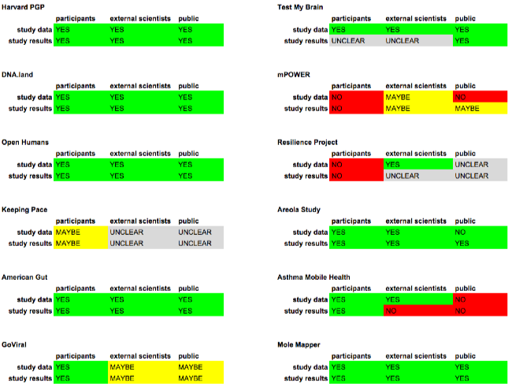

Sharing Guidebook

Participating Studies
The focus of this guidebook is studies that are participating in the GET Labs event at Harvard Medical School on April 25th, 2016. Several high-level features -- including "equal access", "open science" and "recontact" -- are summarized across all studies in the sections below. For some studies, we also provide a more detailed examination at how certain sharing features are implemented, linked from the following list:
Do you want your study listed on this page? Please fill-out this short survey. [Link]
Equal Access
Equal access is a model of governance where a research participant and the research team share individual-level research data with each other. Researchers do not have exclusive access and control over data generated in the study, instead data flows in both directions. If you sign-up for study practicing equal access, then you should expect to be able to access your slice of data in the study.
 |
DO practice equal access |
|
 |
DO NOT practice equal access |
|
UNCLEAR |
Open Science
Sharing study data outside of the primary research team requires planning and effort. There are governance considerations (informed consent, privacy, de-identification, credentialing of third parties), platform requirements and operational resources needed to implement sharing. For each study, we assumed that the primary research team has access to the study data, so we asked: what about: participants? external researchers? general public?
Summary

-->(re)Contact
Bacon ipsum dolor amet sausage frankfurter short loin pork belly cow brisket biltong sirloin turkey. Landjaeger ribeye pastrami strip steak pancetta shoulder. Kevin biltong turducken, cow bacon ham short loin flank tenderloin short ribs alcatra. Frankfurter sirloin spare ribs pork chop. Ribeye corned beef biltong chuck. Spare ribs flank shoulder pork swine ham turducken.
Appendix
Historical Precedents
Here is a list of biomedical research studies that have pioneered providing participants access to data generated about them in a research study setting.
Personal Genome Data
Microbiome Data from Bodily Habitats
Genotype Data
Viral Data
MRI Data
Cancer Genomes
About GET Labs
The GET Conference is preceded by a uniquely interactive event on April 25th called GET Labs + Expo. At GET Labs, you get the opportunity to experience some of the best participatory health research studies available today. You can advance human health and disease research through direct participation in up to 20 different studies.
Contributors
Glossary
Equal Access
Bacon ipsum dolor amet sausage frankfurter short loin pork belly cow brisket biltong sirloin turkey. Landjaeger ribeye pastrami strip steak pancetta shoulder. Kevin biltong turducken, cow bacon ham short loin flank tenderloin short ribs alcatra. Frankfurter sirloin spare ribs pork chop. Ribeye corned beef biltong chuck. Spare ribs flank shoulder pork swine ham turducken.
Fellows
The Mozilla Science Lab has a group of awesome fellows in our annual fellowship program, the 2015 fellows are present at WOW, and will be co-running sessions throughout the event.